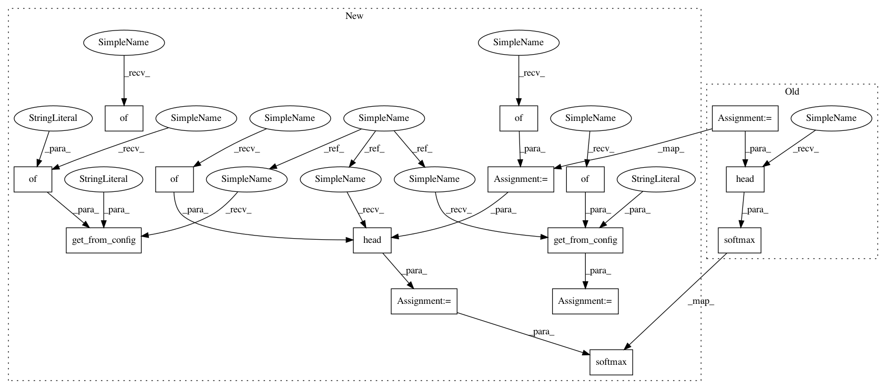

7fd49e352027b5e24d0f8ede917877e5d5ef945f,dataset/models/tf/unet.py,UNet,_build,#UNet#,26
Before Change
kwargs["batch_norm"] = batch_norm
with tf.variable_scope("UNet"):
x = self.input_block(dim, inputs["images"], filters, **kwargs)
layers_filters = 2 ** np.arange(num_blocks) * filters * 2
x = self.body(dim, x, layers_filters, **kwargs)
output = self.head(dim, x, filters, num_classes, **kwargs)
logits = tf.identity(output, "predictions")
tf.nn.softmax(logits, name="predicted_proba")
@classmethod
def body(cls, dim, inputs, filters, **kwargs):
UNet body
After Change
number of downsampling/upsampling blocks (4 by default)
def _build(self):
names = ["images", "masks"]
_, inputs = self._make_inputs(names)
num_classes = self.num_classes("masks")
data_format = self.data_format("images")
dim = self.spatial_dim("images")
batch_norm = self.get_from_config("batch_norm", {"momentum": 0.1})
filters = self.get_from_config("filters", 64)
num_blocks = self.get_from_config("num_blocks", 4)
input_block_config = self.get_from_config("input_block", {"filters": filters})
layers_filters = 2 ** np.arange(num_blocks) * filters * 2
body_config = self.get_from_config("body", {"filters": layers_filters})
head_config = self.get_from_config("head", {"filters": filters})
head_config["num_classes"] = num_classes
kwargs = {"data_format": data_format, "training": self.is_training}
if batch_norm:
kwargs["batch_norm"] = batch_norm
with tf.variable_scope("UNet"):
x = self.input_block(dim, inputs["images"], **{**kwargs, **input_block_config})
x = self.body(dim, x, **{**kwargs, **body_config})
output = self.head(dim, x, **{**kwargs, **head_config})
logits = tf.identity(output, "predictions")
tf.nn.softmax(logits, name="predicted_proba")
@classmethod
def body(cls, dim, inputs, filters, **kwargs):
UNet body
In pattern: SUPERPATTERN
Frequency: 3
Non-data size: 15
Instances
Project Name: analysiscenter/batchflow
Commit Name: 7fd49e352027b5e24d0f8ede917877e5d5ef945f
Time: 2017-11-10
Author: rhudor@gmail.com
File Name: dataset/models/tf/unet.py
Class Name: UNet
Method Name: _build
Project Name: analysiscenter/batchflow
Commit Name: 7fd49e352027b5e24d0f8ede917877e5d5ef945f
Time: 2017-11-10
Author: rhudor@gmail.com
File Name: dataset/models/tf/vgg.py
Class Name: VGG
Method Name: _build
Project Name: analysiscenter/batchflow
Commit Name: 7fd49e352027b5e24d0f8ede917877e5d5ef945f
Time: 2017-11-10
Author: rhudor@gmail.com
File Name: dataset/models/tf/linknet.py
Class Name: LinkNet
Method Name: _build
Project Name: analysiscenter/batchflow
Commit Name: 7fd49e352027b5e24d0f8ede917877e5d5ef945f
Time: 2017-11-10
Author: rhudor@gmail.com
File Name: dataset/models/tf/unet.py
Class Name: UNet
Method Name: _build